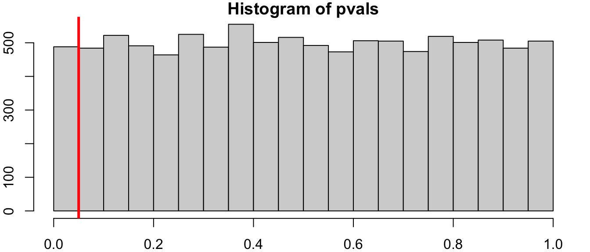

When you test a hypothesis, there are two types of errors: You could reject when the null is true or you could fail to reject when the null is false. The following matrix summarises this:
H_0 is TRUE
H_0 is FALSE
Don’t Reject
Good!
Type 2 Error
Reject
Type 1 Error
Good!
In other words:
Type 1: False Positive
Type 2: False Negative
12.1 Probability of errors
What’s the probability your reject the null, even though it’s true? Let’s say we reject the null if the p-value is, say, less than 5%. This means that any value in the 5% tails of the distribution would lead to us rejecting the null hypothesis - even though it’s true! The prbability that we do this is 5%, since there’s a 5% chance that we’ll see a value that is “too unlikey” at the 5% level.
As usual, I like to demonstrate things via simulation. Here’s the setup:
Set the population parameters as \(\mu = 0\) and \(\sigma = 1\)
Simulate normal data
Do a two sided test for \(H_0: \mu = 0\)
Note that this null hypothesis is TRUE
Count how many times we reject the null.
The output of t.test() contains the p-value
set.seed(21); par(mar =c(2,2,1,1)) # unimportant# set an empty vector, to be filled with p-valuespvals <-c() for(i in1:10000){ # repeat 10,000 times# Simulate 30 normal values with a population mean of 0 newsample <-rnorm(n =30, mean =0, sd =1)# Test whether the population mean is 0 my_t_test <-t.test(newsample, alternative ="two.sided", mu =0)# record the p-value (the output of t.test has some hidden values) pvals[i] <- my_t_test$p.value # }# Testing at the 5% levelsum(pvals <0.05) /length(pvals) # should be close to 0.05
[1] 0.0488
# Fun fact: under the null hyothesis, all p-values are equally likely# this fun fact is not relevant to this course.hist(pvals)abline(v =0.05, col ="red", lwd =3)

12.2 The Probability of Type 2 Errors
For a two-sided test, our hypotheses are: \[\begin{align*}
H_0: \mu &= \mu_0\\
H_A: \mu &\ne \mu_0\\
\end{align*}\]
If the null is actually false1, what’s \(\mu\)? All we know is that it isn’t\(\mu_0\).2 It could be a little above \(\mu_0\), in which case it might be hard to reject \(\mu_0\). It could be a far above \(\mu_0\), in which case it might be easy to reject \(\mu_0\).
Easy to reject \(\mu_0\) since it’s so far from \(\mu\) (high power)
Hard to not reject the false \(\mu_0\) (low Type 2)
Power is our ability to correctly reject a false null hypothesis, and is defined as 1 - P(Type 2 Error)
These interpretations are missing the Standard Error, which incorporates sample size. The power depends on the distance between \(\mu\) and \(\mu_0\) relative to the standard error. We can partially control the standard error by having a better study design3 and a larger sample size, both of which would give us more power.
12.3 Power by Simulation (DIY)
The following code calculates the power. Run it many times, changing \(\mu_0\), \(\sigma\), and \(n\) to see what happens to the power.
# Set parametersmu <-0# don't change this, but change the other parametersmu_0 <-0.1sigma <-0.5n <-50# Record p-valsp_vals <-c()for(i in1:10000){ p_vals[i] <-t.test(rnorm(n, mu, sigma), mu = mu_0)$p.value}# The proportion of times the null was (correctly) rejectedmean(p_vals <0.05) # Power
[1] 0.2835
mean(p_vals >0.05) # P(Type 2 Error)
[1] 0.7165
13 Multiple Comparisons
Suppose we have a coin that’s heads 5% of the time. What’s the probability of at least one heads in 10 flips?
As we saw in previous lectures: P(\(\ge\) 1 heads in 10 flips) = 1 - P(no heads in 10 flips). We can calculate this in R:
1-dbinom(0, size =10, prob =0.05)
[1] 0.4012631
Why did I do this? Consider the following problem:
Suppose you’re testing 10 hypotheses at the 5% level. Assuming all of the null hypotheses are true, what’s the probability that at least one of them is significant?
Since we’re testing at the 5% level, P(Type 1 Error) = 0.05, so
P(\(\ge\) 1 rejection in 10 hypotheses) =
1-dbinom(0, size =10, prob =0.05)
[1] 0.4012631
In other words, there’s about a 40% chance that we’d get a significant result even though all of the null hypotheses are true.4
14 Summary
Type 1 Error: Reject a true null
Probability is \(\alpha\)
Type 2 Error: Fail to reject a false null
Probability depends on the distance between \(\mu\) and \(\mu_0\), relative to the standard error.
Multiple comparisons problem: The more hypotheses you test, the more likely it is that at least one of them is falsely labelled significant.
If we have the hypotheses \(H_0:\mu = 1\) versus \(H_0:\mu = 2\), we can directly calculate the power. Run the following code to open the Shiny app, and interpret the results.
False in the population, not just rejected due to a sample.↩︎
I once saw a bag in a grocery store with a label that said “It’s Not Bacon”. I had no idea what was in that bag. In the video I said it was kale, but that turns out to be false.↩︎